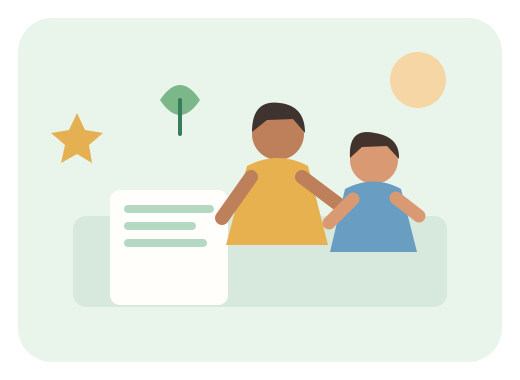
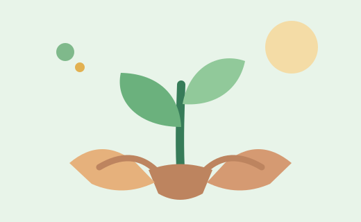
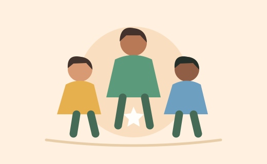

Educação
Aprender para crescer
Rodas de leitura, reforço escolar e oficinas criativas para estimular a aprendizagem.
Meta demonstrativa65%
Meta ilustrativa: 65 de 100 materiais pedagógicos.
Quero participarA mudança acontece em conjunto
Conheça nossas frentes demonstrativas e descubra como participar, compartilhar conhecimento ou apoiar uma causa.

Nossas iniciativas
Use os filtros para explorar as áreas de atuação.
Rodas de leitura, reforço escolar e oficinas criativas para estimular a aprendizagem.
Meta ilustrativa: 65 de 100 materiais pedagógicos.
Quero participar
Plantio de mudas e ações de conscientização para tornar espaços públicos mais verdes.
Meta ilustrativa: 40 de 100 mudas para plantio.
Quero participar
Campanhas de arrecadação e organização de redes locais de apoio a famílias.
Meta ilustrativa: 78 de 100 kits de apoio.
Quero participarExibindo todos os projetos.
Apoie com responsabilidade
Você pode ajudar divulgando as iniciativas, oferecendo seu tempo ou contribuindo com materiais. Para este protótipo acadêmico, não há processamento de pagamentos nem recebimento real de doações.
Quero apoiar uma iniciativaUma organização responsável informa suas metas, registra receitas e despesas e publica resultados para a comunidade.
Conheça os princípios de transparência →Prestação de contas
Em uma versão real, esta área disponibilizaria documentos verificáveis e relatórios financeiros.
Resumo das ações, metas e resultados alcançados.
Exemplo demonstrativoRegistro de entradas, despesas e destinação dos recursos.
Exemplo demonstrativoExplicação sobre coleta, uso e proteção de dados pessoais.
A elaborar para produçãoComponentes de interface
Exemplos de alertas, notificações e janela modal para demonstrar os componentes visuais da Entrega II.
Os dados e metas exibidos neste site são ilustrativos.
Você pode conhecer as iniciativas e demonstrar interesse.
Não são processadas doações nem armazenados cadastros.
Use os filtros acima para encontrar uma área de atuação.
Notificação de demonstração
Componente de feedback funcionando localmente.